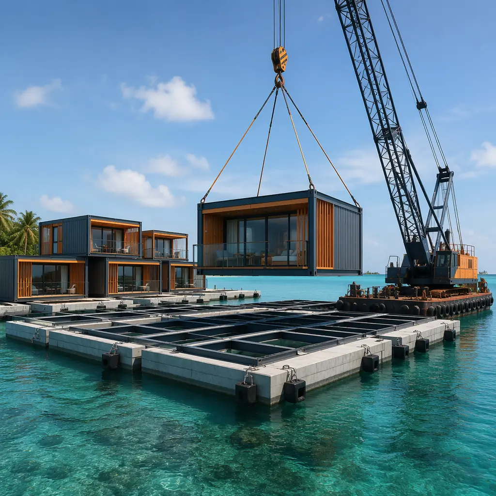
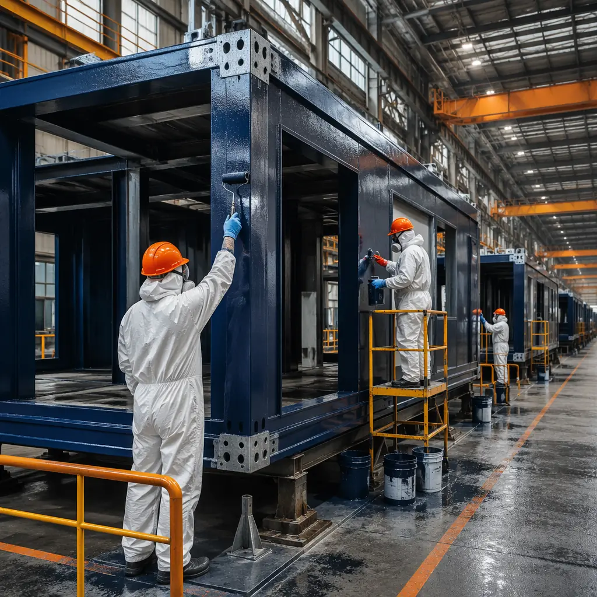
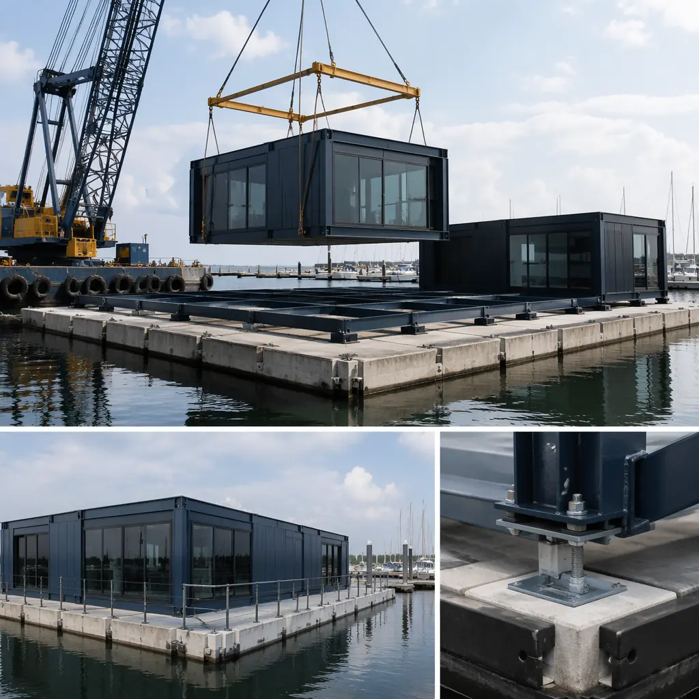
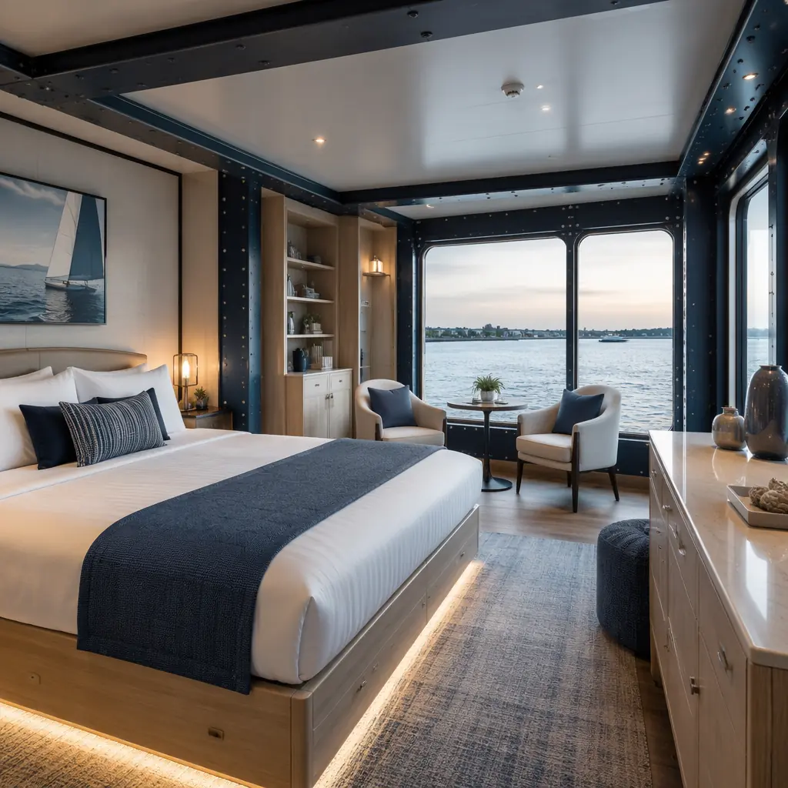
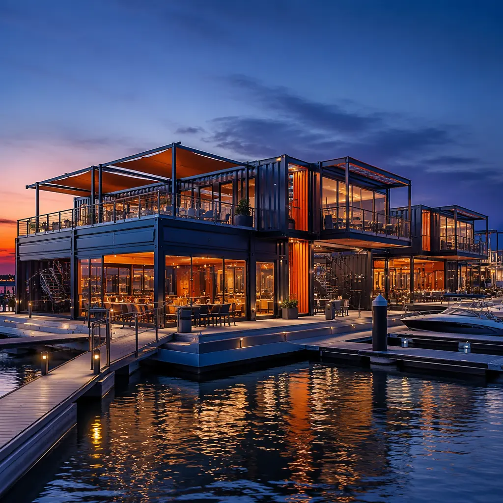

Waterfront construction has always been the most logistically punishing category of building: barges replace trucks, tides dictate work schedules, and every material delivery requires marine coordination that multiplies costs by 2–3x compared to land-based projects. Modular floating construction eliminates these multipliers at their source: the building modules are fabricated in a factory — on land, under controlled conditions — then transported to the waterfront and lifted onto a floating platform or piles in a matter of days. From offshore oil and gas accommodations to floating hotels in the Maldives, marina clubhouses in Florida, and waterfront restaurant pavilions in Sydney Harbour, modular marine construction is redefining what's possible on water. This article examines the engineering, corrosion protection, regulatory pathway, and cost structure that make modular the default method for any building that floats.

Why Floating Construction Demands Modular Methods
Conventional waterfront construction follows a punishing logic: you must build a temporary workspace — a construction barge, a cofferdam, a trestle — before you can even begin building the permanent structure. Every trade mobilization requires boat access. Concrete deliveries require barge-mounted pump trucks. The weather window for pile driving, concrete placement, and steel erection shrinks to perhaps 120 workable days per year on an exposed coastline. Modular construction solves this by moving the building process entirely onto land:
Land-based factory production eliminates marine logistics during construction. The modules — complete with interior finishes, MEP systems, and marine-grade corrosion protection — are built in a factory hundreds of kilometers from the waterfront. The only marine operation is the final installation: crane-barge lifting the completed modules onto the floating platform or pile foundation. This reduces on-water construction time from 12–18 months to 2–4 weeks of module installation. A floating resort developer in the Andaman Sea completed 48 guest-room modules on land in 16 weeks, then installed them on the pontoon platform in 11 working days — a schedule that would have required 22 months of continuous barge-based construction using conventional methods.
Factory-controlled corrosion protection beats field-applied coatings. Marine environments — salt spray, constant humidity, UV exposure — are the most aggressive corrosion environments in construction. Steel structures within 500m of breaking surf experience corrosion rates 3–5x higher than inland structures. Factory-applied corrosion protection systems — hot-dip galvanizing to ASTM A123, zinc-rich epoxy primers with polyurethane topcoats applied in controlled humidity and temperature — achieve coating adhesion and uniformity that field application on a barge deck, with salt-laden wind and changing weather, cannot match. Independent testing by NACE International confirmed that factory-applied three-coat marine protection systems achieve a corrosion resistance rating of C5-M (very high durability for marine environments) per ISO 12944, while the same system field-applied achieved C3-M (medium durability) due to surface preparation limitations and application condition variability.
Module-to-pontoon connections allow future reconfiguration. Floating buildings are not permanent in the same way land-based buildings are — a floating hotel may need to add 20 rooms in year 3, relocate its restaurant module in year 5, or be towed to a different mooring entirely in year 10. Modular construction's bolted connection system — the same high-strength friction-grip bolt connections used in seismic-resistant modular buildings — enables reconfiguration without demolition. Modules can be unbolted from the pontoon grid, moved, and reconnected with minimal disruption to adjacent modules that remain operational. This flexibility has no equivalent in conventional marine construction, where building additions require new pile driving, new concrete decks, and months of on-water work.

Floating Platform Engineering: Pontoons, Piles, and Mooring Systems
The module is only half the system. The floating platform — whether a concrete pontoon, a steel barge, or a pile-supported deck — must be engineered to carry the module dead load, live loads (occupants, furniture, equipment), and environmental loads (wave action, wind, current, and in some locations, ice). The engineering approach differs by platform type:
Concrete pontoon systems. The most common floating platform for permanent buildings, concrete pontoons are hollow reinforced concrete boxes — typically 3m wide by 12–20m long by 1.5–2.5m deep — connected side-by-side and end-to-end to form a floating grid. Each pontoon provides approximately 15–25 tonnes of buoyancy per linear meter, meaning a 12m pontoon section supports 180–300 tonnes — enough for a 2-story modular building with 4–6 modules. The pontoon grid is moored to the seabed using chain catenary or tension-leg mooring systems. The critical connection detail is the module-to-pontoon interface: steel base plates welded to the pontoon's embedded anchor plates receive the module's column base plates, connected with high-strength bolts through slotted holes that allow for pontoon movement without transferring bending moments into the module frame.
Pile-supported deck systems. For shallow water applications — marina buildings, waterfront restaurants, ferry terminals — a pile-supported concrete or steel deck eliminates the complexity of floating platforms. Steel H-piles or precast concrete piles are driven to refusal or design depth, a steel or precast concrete deck is placed on the pile caps, and modular building units are bolted to the deck using the same baseplate connection system as land-based modular construction. The advantage over conventional pile-supported construction is that the building modules arrive complete — the pile contractor drives piles and places the deck, then the modular contractor installs the finished building in days. This separates the marine construction (piles and deck) from the building construction (modules), allowing both to proceed on independent schedules rather than sequentially.
Mooring system design. For a deeper look, our modular vs. traditional construction guide covers the details. Floating buildings require permanent mooring systems that resist 50-year storm conditions. The typical configuration for a modular floating building is a 4-point or 8-point catenary mooring using stud-link chain (38–52mm diameter) connected to drag-embedment anchors or vertically loaded anchors (VLAs) in the seabed. The mooring analysis — performed using DNV's DeepLines or Orcina's OrcaFlex software — must account for the building's windage area (the above-water profile that catches wind) and current drag area (the below-water profile that catches tidal and river currents). A 40-module floating hotel with 18m of freeboard in 50-knot wind conditions generates approximately 120–180 kN of horizontal mooring load — within the capacity of 6 properly sized drag-embedment anchors in sand or stiff clay seabed conditions.

Corrosion Protection Specification for Marine Modules
The difference between a modular marine building that lasts 50 years and one that requires structural repair in 15 years is the corrosion protection specification. Marine-grade modular construction requires a multi-layer protection system that goes significantly beyond standard commercial building specifications:
| Protection Layer | Specification | Purpose |
|---|---|---|
| Steel substrate | ASTM A572 Grade 50 or EN S355J2, blast-cleaned to Sa 2½ (near-white metal) | Structural integrity + coating adhesion surface |
| Galvanizing | Hot-dip galvanized to ASTM A123, 85μm minimum zinc thickness | Sacrificial cathodic protection for base steel |
| Zinc-rich epoxy primer | 2-component zinc-rich epoxy, 75μm DFT, ISO 12944 C5-M rated | Galvanic protection + adhesion bridge to topcoats |
| High-build epoxy intermediate | High-solids epoxy MIO (micaceous iron oxide), 150μm DFT | Barrier protection, moisture resistance |
| Polyurethane topcoat | Aliphatic acrylic polyurethane, 50μm DFT, UV-stable | UV resistance, color retention, final barrier |
| Connection fasteners | ASTM A193 B7 bolts with Geomet 500A zinc-flake coating + PTFE topcoat | 1,000-hour salt spray resistance on connections |
| Interior environment | Continuous positive-pressure HVAC with marine-grade stainless steel ductwork | Prevents salt-laden air ingress into conditioned spaces |
This specification adds approximately $18–25 per square foot to the module cost compared to standard commercial construction — a 12–18% premium. But when weighed against the alternative of conventional marine construction with field-applied coatings that require reapplication every 7–10 years, the lifecycle cost analysis favors factory-applied protection by a margin of 3:1 over a 30-year building life.

Applications: Where Modular Marine Construction Excels
Four application categories currently drive demand for modular floating and marine construction, each with distinct engineering requirements and economic drivers:
Offshore workforce accommodations. Oil and gas platforms, wind farm installation vessels, and subsea cable-laying ships all require accommodations for crews that may number 100–400 workers. Historically, these accommodations were converted jack-up rigs or purpose-built floating hotels (flotels) with 3–5 year construction timelines and $80–150 million price tags. Modular floating accommodation platforms — essentially a steel pontoon with 40–80 factory-built bedroom modules, a galley module, recreation modules, and utility modules — can be assembled in 8–12 months for $25–50 million, depending on capacity and specification. The economics are compelling enough that three major offshore operators have shifted their accommodation strategy from converted rigs to new-build modular platforms in the past 24 months. A remote camp accommodation project in the North Sea deployed 64 modules on a 90m x 45m pontoon in 9 months from contract to occupancy — a timeline previously considered impossible for offshore accommodation.
Floating hotels and overwater resorts. The Maldives alone has 160+ resort islands, many of which are adding overwater villa capacity to meet post-pandemic demand. Conventional overwater villa construction — driving timber piles from a barge, building a timber deck, then stick-building the villa on site — takes 8–12 weeks per villa and can only proceed during calm-sea weather windows (roughly 200 days per year). Modular overwater villas — complete prefabricated units with finishes, bathroom pods from factory-built bathroom pods, and built-in furniture — can be installed at a rate of 4–6 villas per day once the pile grid is in place. A Maldivian resort operator added 24 overwater villas in 9 weeks using modular methods (2 weeks of pile driving + 1 week of module installation + 6 weeks of commissioning and fit-out) versus 54 weeks using conventional construction — a schedule compression of 83%.
Marina clubhouses and waterfront commercial. For a deeper look, our bim-to-factory digital workflow guide covers the details. Marina redevelopments in Florida, the Mediterranean, and Southeast Asia increasingly include clubhouse facilities — restaurants, shower blocks, chandleries, crew lounges — that must be built on water or immediately adjacent to it. Modular construction allows these facilities to be built during the off-season (when the marina is less active) and installed during a 2-week shutdown window. The Clearwater Marina in Florida replaced its 40-year-old clubhouse with a 12-module, two-story facility installed over 8 days during a scheduled maintenance closure, avoiding 8 months of disruption that conventional construction would have required.
Ferry terminals and water transportation hubs. For a deeper look, our modular construction permitting & zoning… guide covers the details. Cities investing in water transportation — ferry networks in Bangkok, Istanbul, Sydney, and New York — need terminal buildings that combine passenger waiting areas, ticketing, retail, and crew facilities in compact waterfront footprints. Modular terminals can be built offsite and installed during weekend service suspensions, eliminating the 12–18 months of partial terminal closures that plague conventional marine construction projects. The Sydney Ferries Circular Quay upgrade used 18 modular terminal modules installed over 4 weekends — a project that was originally scoped at 14 months of phased construction with continuous passenger disruption.

Regulatory Pathway: Classification Society and Coastal Permitting
Floating buildings occupy a regulatory gray zone — they are not ships (so maritime classification rules do not fully apply), but they are not land-based buildings (so the International Building Code does not directly govern buoyancy and mooring). The regulatory pathway typically involves two parallel tracks:
Classification society approval (structural and stability). For a deeper look, our modular construction financing — loans,… guide covers the details. Most floating buildings obtain structural and stability approval from a classification society — DNV, Lloyd's Register, ABS, or Bureau Veritas — under their "Floating Offshore Installations" or "Floating Structures" rules. The module-to-pontoon connection system must be approved as part of the overall floating installation design. Classification society approval confirms that the floating structure meets stability criteria (righting moment exceeds overturning moment under design wind and wave conditions), structural strength criteria (steel stresses remain within allowable limits), and mooring integrity criteria (the mooring system can withstand the design environmental event without failure). This approval process typically takes 4–6 months and requires submission of detailed finite element analysis models and mooring analysis reports.
Coastal zone permitting and environmental review. For a deeper look, our modular apartment buildings cost guide covers the details. Floating buildings in most jurisdictions require permits under coastal zone management regulations, which assess visual impact, navigation safety, water quality effects (from shading of seabed vegetation), and public access implications. Modular construction simplifies this process in one key respect: the permit application can demonstrate that on-water construction duration is measured in weeks rather than months or years, dramatically reducing the environmental disturbance period — typically the most contentious element of coastal permitting. Environmental agencies in California, Florida, and Queensland have all issued guidance recognizing modular construction as a "minimally disruptive" method that qualifies for expedited permitting review in certain circumstances.
Planning a marine or waterfront project? Our engineering team can provide a preliminary feasibility assessment — structural concept, corrosion protection specification, mooring analysis scope, and regulatory pathway — within 10 business days. Contact us to discuss your project requirements.
The economics of floating construction have shifted permanently. Modular methods have taken a building category that was defined by cost overruns, weather delays, and corrosion nightmares, and made it predictable — factory quality, fixed timelines, and lifecycle durability that field construction cannot match. For any developer, operator, or government agency planning to build on water, the question is no longer whether modular marine construction works, but whether your project can afford the schedule risk, cost uncertainty, and corrosion exposure of building any other way. For a comprehensive assessment of your site's suitability, review our partner evaluation guide and coastal construction analysis before initiating your marine project RFP.